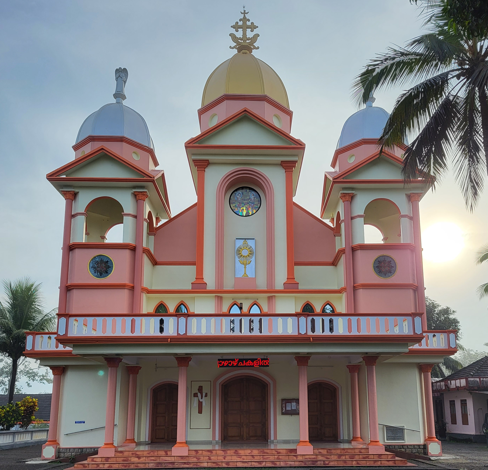
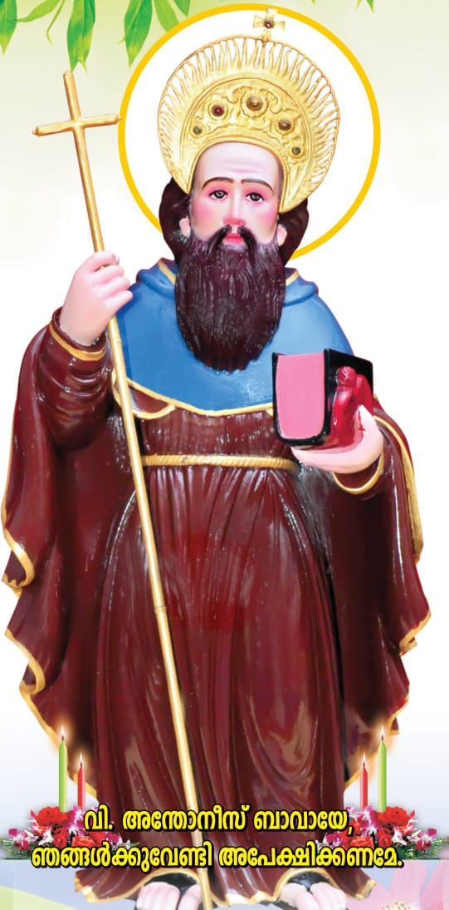
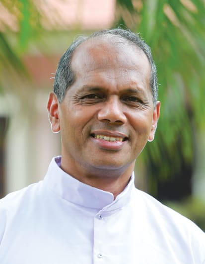

1872 A.D.
Elamthottam, Kottayam Dt.
Kerala, India
Pin - 686 651St. Antony The Abbot
The church's origins trace back to the early 19th century when the Latin Rite Carmelites, based in Varappuzha, administered over the Syriac Christians. In 1872, with the support of local Christian families and under the guidance of Melus Methra, a church was founded in Elamthottam in honor of St. Antony the Abbot. In 1882, Chaldean Metropolitan Thondanat Mar Abdisho, consecrated by Melus Metropolitan, established this church as his episcopal seat and commenced his ecclesiastical administration. Following his passing in 1900, the church and its properties were entrusted to the Roman Catholic Church. In 1911, under Bishop Mar Kuryalassery of the Changanassery Diocese, the church became a sub-parish of Pala Valiya Church. Later, on December 21, 1966, Bishop Mar Sebastian Vayalil elevated it to the status of a parish church.


Anthony the Great (c. 251–356), also known as Anthony of Egypt or Anthony the Abbot, was a Christian monk from Egypt who is venerated as the Father of Christian Monasticism. Renowned for his ascetic lifestyle, he gave up his wealth to live in the desert, seeking spiritual purity and solitude. His life and teachings, chronicled by Athanasius of Alexandria, inspired the monastic tradition across both Eastern and Western Christianity. Anthony is also remembered for resisting numerous temptations, including visions of demons, and is invoked as a patron against skin diseases like "St. Anthony's Fire." His feast day is celebrated on January 17.
| Day | Timings |
|---|---|
| Sunday | 04:00 pm, 06:45 am, 09:30 am |
| Monday - Saturday | 06:30 am |

Vicar
📞 +91 94964 13859
Trustee
📞 +91 91234 56789
Accountant
📞 +91 90123 45678
Secretary
📞 +91 89012 34567
Email: babbapallyelamthottam@gmail.com
Phone: 7025429553
Address: Elamthottam, Kottayam Dt. - 686 651